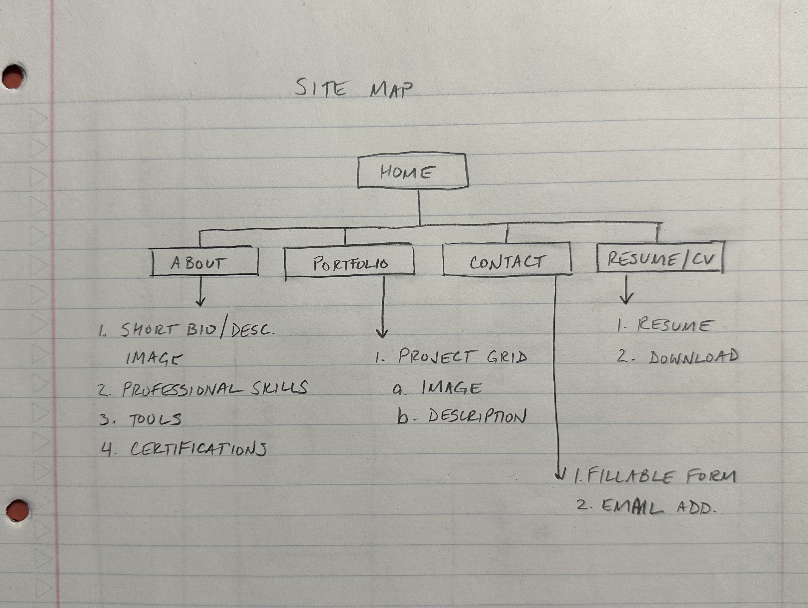
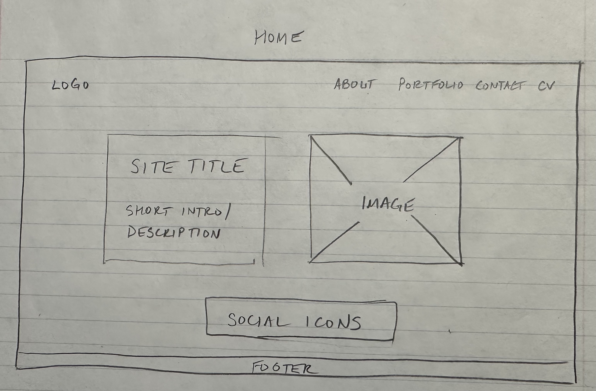

This proposal outlines my plan and my goals for my Final Project website. The purpose of this proposal is to describe the purpose of the website, define its intended structure, and identify the resources I will use to design and build it.
For my final project, I propose to design and build a professional portfolio website that features my work, skills, education, and experience in web development and design. The website will present my projects in a clear, organized format that is easy to navigate. It is important that the site is visually appealing, especially to potential employers and clients.
The primary goals of the website are to:
The intended audience for my website includes potential employers, clients, and professional contacts in the web development and technology fields.
Planned features for the website include:
Please note that some interactive features may be non-functional prototypes for the purpose of this class project.
The website content will be organized into five primary pages. A navigation bar with menu will be available on all pages so visitors are able to easily move throughout the site from any page.
Pages included on the website:
The website will use a clean, professional layout with consistent design across all pages. There will be a header at the top of each page containing the site logo/name and the main navigation menu; a footer will be displayed at the bottom showing copyright information and additional navigation links. The main content area will be centered on the page with appropriate spacing and readable typography.
Below is a visual representation of the site map:
The homepage wireframe includes a header with site navigation, a hero section with a brief introduction, an image, social media icons, and a footer.
The design emphasizes professionalism, intuitive design, and easy access to my work.
One resource that will help complete this project is Structuring Content with HTML .
This resource provides documentation, examples, and tutorials on HTML structure, semantic tags, and best practices. I will use it to ensure all HTML elements are coded properly and follow web standards and accessibility guidelines for a professional portfolio site.